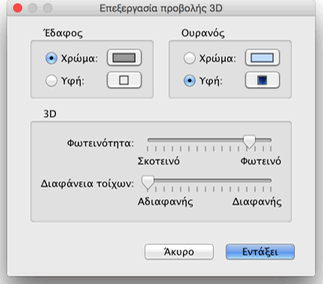

| Επεξεργασία προβολής 3D | |||
Επιλέξτε Προβολή 3D > Θέαση από ψηλά ή Προβολή 3D >Εικονική επίσκεψη για εναλλαγή μεταξύ των δύο σημείων θέασης που προτείνονται από την προβολή 3D.
Όταν είναι επιλεγμένη η Θέαση από ψηλά, η προβολή 3D εμφανίζει την οικία σας σε τρεις διαστάσεις όπως φαίνεται από ψηλά. Σε αυτή την κατάσταση λειτουργίας η μετακίνηση του ποντικιού προς τα αριστερά ή προς τα δεξιά με το αριστερό κουμπί πατημένο περιστρέφει την οικία γύρω από έναν κατακόρυφο άξονα που βρίσκεται στο κέντρο της οικίας, η μετακίνηση του ποντικιού μπρος-πίσω με το αριστερό κουμπί πατημένο περιστρέφει την οικία γύρω από έναν οριζόντιο άξονα, ενώ η περιστροφή του τροχού του ποντικιού μεγεθύνει ή σμικρύνει την τρισδιάστατη προβολή. Όταν είναι επιλεγμένη η Εικονική επίσκεψη , στο σχέδιο οικίας μπορείτε να δείτε από ψηλά και τον εικονικό επισκέπτη. Η θέση του και η γωνία θέασης ενημερώνονται ταυτόχρονα στο σχέδιο και στην προβολή 3D με κάθε κίνηση του επισκέπτη. Αυτός ο εικονικός επισκέπτης περιβάλλεται από 4 δείκτες.
|


|
Όταν ο ενδείκτης θέσης του ποντικιού βρίσκεται πάνω από κάποιον από τους ώμους του επισκέπτη αλλάζει, υποδεικνύοντάς σας ότι μπορείτε να σύρετε και να αφήσετε το σχετικό σημείο για να αλλάξετε τη γωνία του κεφαλιού ή του σώματος του επισκέπτη. Ενώ πατάτε το κουμπί του ποντικιού, μια συμβουλή εργαλείου σας δείχνει την τιμή της γωνίας που επεξεργαστήκατε. Μπορείτε να επεξεργαστείτε τα λοιπά ιδιοχαρακτηριστικά της προβολής 3D επιλέγοντας Προβολή 3D > Τροποποίηση....  Στον πίνακα προβολή 3D μπορείτε να αλλάξετε το πεδίο θέασης του εικονικού επισκέπτη, το ύψος του, το χρώμα ή την υφή του εδάφους και του ουρανού, τη φωτεινότητα και τη διαφάνεια των τοίχων. |
|